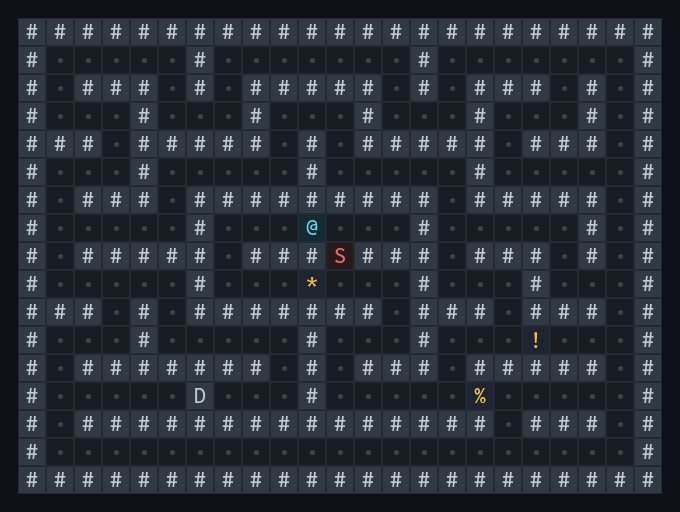
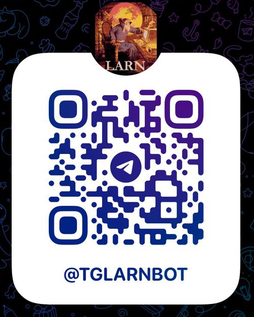

Classic roguelike
Permadeath, exploration, scarcity, and the thrill of one more turn.
Live on Telegram
TGLarn carries the original ReLarn adventure into Telegram—every turn, spell, shop, monster, and terrible decision intact.


Enter the caverns Scan to open @tglarnbotPublic beta
TGLarn is currently in beta. Bugs and rough edges are expected, and issue reports are welcome. If something breaks—or simply feels wrong—please tell me.
Permadeath, exploration, scarcity, and the thrill of one more turn.
The ReLarn C engine remains the authority behind every game rule.
Maps become images and terminal prompts become contextual buttons.
Your personal run persists between chats, commutes, and close calls.
A cure lies somewhere below.
Your daughter is dying from Dianthroritis. You have only a handful of days to descend into Larn, gather enough power, and return with the Potion of Cure. The dungeon is indifferent. Every decision is permanent.
Find the potion.
Make it home.
Try not to die.
One message. One turn.
The interface changed. The tension did not. TGLarn keeps the systems that make every expedition unpredictable and turns their commands into clear Telegram actions.
01 / EXPLORE
Map rooms, trace corridors, inspect strange objects, and choose when to descend.
02 / FIGHT
Trade blows with monsters, manage health, and know when survival means retreat.
03 / INVENTORY
Equip weapons, read scrolls, quaff potions, and make every inventory slot count.
04 / TRADE
Sell treasure, upgrade equipment, visit the bank, and prepare for the next descent.
05 / MAGIC
Discover spells and decide whether precious magic should solve this problem or the next.
06 / BEGIN AGAIN
Every run ends in a cure, a deadline, or a grave. The next character starts wiser.
From terminal to Telegram
Real TGLarn output: crisp rendered maps, explicit prompts, and controls that adapt to the exact state of the C engine.
Under the dungeon
TGLarn translates an old terminal protocol without rewriting the game. The original engine still decides what happens; the surrounding layers make it feel native to chat.
Messages, maps, and inline controls reach the player.
Turns button presses into terminal commands and responses.
Owns the dungeon, combat, inventory, magic, and rules.
Preserves player sessions and brings every run back.
Behind the bot
Product direction, game adaptation, and the Telegram experience by @blooomberg. Built in collaboration with Codex.
Keep the dungeon running
TGLarn is free to play. If the caverns have claimed enough of your time, you can help fund continued development. Support is entirely optional and does not unlock gameplay benefits.
In the bot, open the game menu and choose ⭐ Support Development ⭐.
Your move
Choose a character. Take one step. See how far the run goes.
Current release v0.1.0